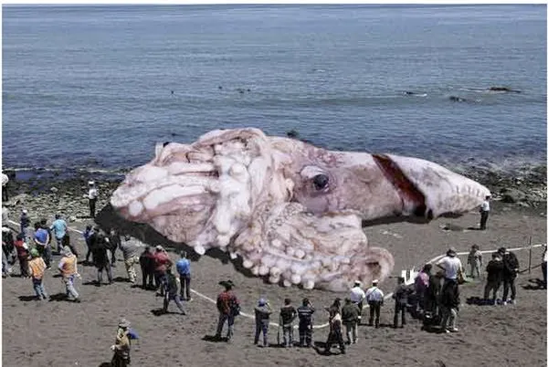
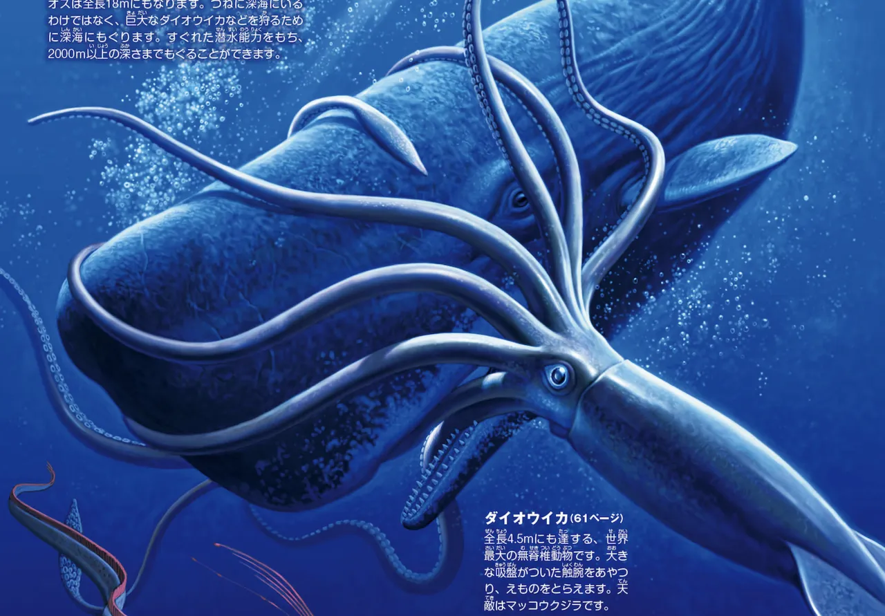

動物の説明
イカは「軟体動物（mollusc）」に属しており、その中でも「頭足類（cephalopod）」に分類されます。つまり、タコやコウイカに近いグループの動物です。
世界には300種以上のイカが生息しており、浅い海から深海まで、さまざまな海域で確認されています。
イカの体は大きく「胴部（mantle）」「頭部」「腕部（足）」の3つに分かれております。
腕は全部で10本あり、8本の「腕（arms）」と、獲物を捕らえるために長く伸びる2本の「触腕（tentacles）」を持っています。

類似種
ダイオウイカ
ダイオウイカは、8本の腕と2本の触腕、胴（マントル）、頭、目、くちばし、噴射管（水を噴き出す器官）など、一般的なイカと同じ構造を備えています。
最大の特徴は非常に大きな体を持つことです。これまでに記録された最大級の個体は、全長約13メートル（触腕を含む）に達したと報告されています。

伝説と科学
歴史
深海に生息する巨大なイカは、かつて幻の存在と考えられていました。
発見されても深海に暮らしているため詳細がわからず、恐れの対象として語られてきた歴史があります。